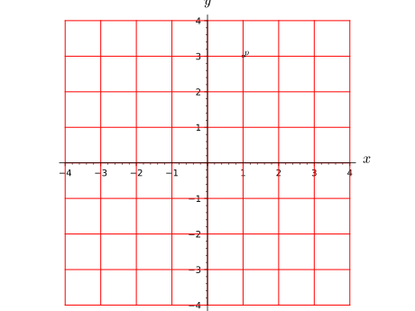
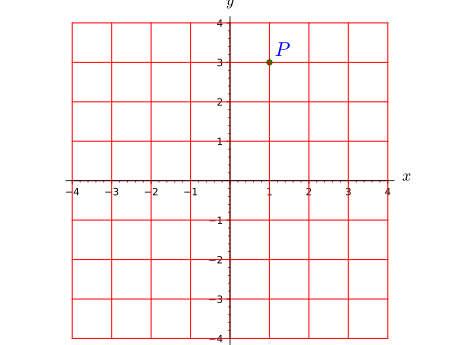

The class ManifoldPoint implements points of a
topological manifold.
A ManifoldPoint object can have coordinates in
various charts defined on the manifold. Two points are declared
equal if they have the same coordinates in the same chart.
AUTHORS:
Eric Gourgoulhon, Michal Bejger (2013-2015) : initial version
Defining a point in \(\RR^3\) by its spherical coordinates:
sage: M=Manifold(3,'R^3',structure='topological')sage: U=M.open_subset('U')# the domain of spherical coordinatessage: c_spher.<r,th,ph>=U.chart(r'r:(0,+oo) th:(0,pi):\theta ph:(0,2*pi):periodic:\phi')
We construct the point in the coordinates in the default chart of U
(c_spher):
sage: p=U((1,pi/2,pi),name='P')sage: pPoint P on the 3-dimensional topological manifold R^3sage: latex(p)Psage: pinUTruesage: p.parent()Open subset U of the 3-dimensional topological manifold R^3sage: c_spher(p)(1, 1/2*pi, pi)sage: p.coordinates(c_spher)# equivalent to above(1, 1/2*pi, pi)
parent – the manifold subset to which the point belongs
coords – (default: None) the point coordinates (as a tuple
or a list) in the chart chart
chart – (default: None) chart in which the coordinates are
given; if None, the coordinates are assumed to refer to the
default chart of parent
name – (default: None) name given to the point
latex_name – (default: None) LaTeX symbol to denote the point;
if None, the LaTeX symbol is set to name
check_coords – (default: True) determines whether coords
are valid coordinates for the chart chart; for symbolic
coordinates, it is recommended to set check_coords to False
EXAMPLES:
A point on a 2-dimensional manifold:
sage: M=Manifold(2,'M',structure='topological')sage: c_xy.<x,y>=M.chart()sage: (a,b)=var('a b')# generic coordinates for the pointsage: p=M.point((a,b),name='P');pPoint P on the 2-dimensional topological manifold Msage: p.coordinates()# coordinates of P in the subset's default chart(a, b)
Since points are Sage elements, the parent of which being the
subset on which they are defined, it is equivalent to write:
sage: p=M((a,b),name='P');pPoint P on the 2-dimensional topological manifold M
A point is an element of the manifold subset in which it has
been defined:
sage: pinMTruesage: p.parent()2-dimensional topological manifold Msage: U=M.open_subset('U',coord_def={c_xy:x>0})sage: q=U.point((2,1),name='q')sage: q.parent()Open subset U of the 2-dimensional topological manifold Msage: qinUTruesage: qinMTrue
By default, the LaTeX symbol of the point is deduced from its name:
The previous coordinates with respect to other charts are kept. To
clear them, use set_coord() instead.
INPUT:
coords – the point coordinates (as a tuple or a list)
chart – (default: None) chart in which the coordinates
are given; if none are provided, the coordinates are assumed to
refer to the subset’s default chart
Warning
If the point has already coordinates in other charts, it
is the user’s responsibility to make sure that the coordinates
to be added are consistent with them.
EXAMPLES:
Setting coordinates to a point on a 2-dimensional manifold:
The previous coordinates with respect to other charts are kept. To
clear them, use set_coord() instead.
INPUT:
coords – the point coordinates (as a tuple or a list)
chart – (default: None) chart in which the coordinates
are given; if none are provided, the coordinates are assumed to
refer to the subset’s default chart
Warning
If the point has already coordinates in other charts, it
is the user’s responsibility to make sure that the coordinates
to be added are consistent with them.
EXAMPLES:
Setting coordinates to a point on a 2-dimensional manifold:
Return the point coordinates in the specified chart.
If these coordinates are not already known, they are computed from
known ones by means of change-of-chart formulas.
An equivalent way to get the coordinates of a point is to let the
chart acting on the point, i.e. if X is a chart and p a
point, one has p.coordinates(chart=X)==X(p).
INPUT:
chart – (default: None) chart in which the coordinates
are given; if none are provided, the coordinates are assumed to
refer to the subset’s default chart
old_chart – (default: None) chart from which the
coordinates in chart are to be computed; if None, a chart
in which the point’s coordinates are already known will be picked,
privileging the subset’s default chart
EXAMPLES:
Spherical coordinates of a point on \(\RR^3\):
sage: M=Manifold(3,'M',structure='topological')sage: c_spher.<r,th,ph>=M.chart(r'r:(0,+oo) th:(0,pi):\theta ph:(0,2*pi):\phi')# spherical coordinatessage: p=M.point((1,pi/2,pi))sage: p.coordinates()# coordinates in the manifold's default chart(1, 1/2*pi, pi)
Since the default chart of M is c_spher, it is equivalent to
write:
sage: p.coordinates(c_spher)(1, 1/2*pi, pi)
An alternative way to get the coordinates is to let the chart act
on the point (from the very definition of a chart):
sage: c_spher(p)(1, 1/2*pi, pi)
A shortcut for coordinates is coord:
sage: p.coord()(1, 1/2*pi, pi)
Computing the Cartesian coordinates from the spherical ones:
sage: c_cart.<x,y,z>=M.chart()# Cartesian coordinatessage: c_spher.transition_map(c_cart,[r*sin(th)*cos(ph),....: r*sin(th)*sin(ph),r*cos(th)])Change of coordinates from Chart (M, (r, th, ph)) to Chart (M, (x, y, z))
The computation is performed by means of the above change
of coordinates:
Actually, in the present case, it is not necessary to specify
old_chart='uv'. Note that the first command erases all
the coordinates except those in the chart c_uv:
Return the point coordinates in the specified chart.
If these coordinates are not already known, they are computed from
known ones by means of change-of-chart formulas.
An equivalent way to get the coordinates of a point is to let the
chart acting on the point, i.e. if X is a chart and p a
point, one has p.coordinates(chart=X)==X(p).
INPUT:
chart – (default: None) chart in which the coordinates
are given; if none are provided, the coordinates are assumed to
refer to the subset’s default chart
old_chart – (default: None) chart from which the
coordinates in chart are to be computed; if None, a chart
in which the point’s coordinates are already known will be picked,
privileging the subset’s default chart
EXAMPLES:
Spherical coordinates of a point on \(\RR^3\):
sage: M=Manifold(3,'M',structure='topological')sage: c_spher.<r,th,ph>=M.chart(r'r:(0,+oo) th:(0,pi):\theta ph:(0,2*pi):\phi')# spherical coordinatessage: p=M.point((1,pi/2,pi))sage: p.coordinates()# coordinates in the manifold's default chart(1, 1/2*pi, pi)
Since the default chart of M is c_spher, it is equivalent to
write:
sage: p.coordinates(c_spher)(1, 1/2*pi, pi)
An alternative way to get the coordinates is to let the chart act
on the point (from the very definition of a chart):
sage: c_spher(p)(1, 1/2*pi, pi)
A shortcut for coordinates is coord:
sage: p.coord()(1, 1/2*pi, pi)
Computing the Cartesian coordinates from the spherical ones:
sage: c_cart.<x,y,z>=M.chart()# Cartesian coordinatessage: c_spher.transition_map(c_cart,[r*sin(th)*cos(ph),....: r*sin(th)*sin(ph),r*cos(th)])Change of coordinates from Chart (M, (r, th, ph)) to Chart (M, (x, y, z))
The computation is performed by means of the above change
of coordinates:
Actually, in the present case, it is not necessary to specify
old_chart='uv'. Note that the first command erases all
the coordinates except those in the chart c_uv:
For real manifolds, plot self in a Cartesian graph based
on the coordinates of some ambient chart.
The point is drawn in terms of two (2D graphics) or three (3D graphics)
coordinates of a given chart, called hereafter the ambient chart.
The domain of the ambient chart must contain the point, or its image
by a continuous manifold map \(\Phi\).
INPUT:
chart – (default: None) the ambient chart (see above); if
None, the ambient chart is set the default chart of
self.parent()
ambient_coords – (default: None) tuple containing the 2
or 3 coordinates of the ambient chart in terms of which the plot
is performed; if None, all the coordinates of the ambient
chart are considered
mapping – (default: None)
ContinuousMap; continuous
manifold map \(\Phi\) providing the link between the current point
\(p\) and the ambient chart chart: the domain of chart must
contain \(\Phi(p)\); if None, the identity map is assumed
label – (default: None) label printed next to the point;
if None, the point’s name is used
parameters – (default: None) dictionary giving the numerical
values of the parameters that may appear in the point coordinates
size – (default: 10) size of the point once drawn as a small
disk or sphere
color – (default: 'black') color of the point
label_color – (default: None) color to print the label;
if None, the value of color is used
fontsize – (default: 10) size of the font used to print the
label
label_offset – (default: 0.1) determines the separation between
the point and its label
OUTPUT:
a graphic object, either an instance of
Graphics for a 2D plot (i.e. based on
2 coordinates of the ambient chart) or an instance of
Graphics3d for a 3D plot (i.e.
based on 3 coordinates of the ambient chart)
EXAMPLES:
Drawing a point on a 2-dimensional manifold:
sage: M=Manifold(2,'M',structure='topological')sage: X.<x,y>=M.chart()sage: p=M.point((1,3),name='p')sage: g=p.plot(X)sage: print(g)Graphics object consisting of 2 graphics primitivessage: gX=X.plot(max_range=4)# plot of the coordinate gridsage: g+gX# display of the point atop the coordinate gridGraphics object consisting of 20 graphics primitives

Actually, since X is the default chart of the open set in which
p has been defined, it can be skipped in the arguments of
plot:
sage: g=p.plot()sage: g+gXGraphics object consisting of 20 graphics primitives
Call with some options:
sage: g=p.plot(chart=X,size=40,color='green',label='$P$',....: label_color='blue',fontsize=20,label_offset=0.3)sage: g+gXGraphics object consisting of 20 graphics primitives

Use of the parameters option to set a numerical value of some
symbolic variable:
An example of plot via a mapping: plot of a point on a 2-sphere viewed
in the 3-dimensional space M:
sage: S2=Manifold(2,'S^2',structure='topological')sage: U=S2.open_subset('U')# the open set covered by spherical coord.sage: XS.<th,ph>=U.chart(r'th:(0,pi):\theta ph:(0,2*pi):\phi')sage: p=U.point((pi/4,pi/8),name='p')sage: F=S2.continuous_map(M,{(XS,X):[sin(th)*cos(ph),....: sin(th)*sin(ph),cos(th)]},name='F')sage: F.display()F: S^2 → Mon U: (th, ph) ↦ (x, y, z) = (cos(ph)*sin(th), sin(ph)*sin(th), cos(th))sage: g=p.plot(chart=X,mapping=F)sage: gS2=XS.plot(chart=X,mapping=F,number_values=9)sage: g+gS2Graphics3d Object
Use of the option ambient_coords for plots on a 4-dimensional
manifold:
sage: M=Manifold(4,'M',structure='topological')sage: X.<t,x,y,z>=M.chart()sage: p=M.point((1,2,3,4),name='p')sage: g=p.plot(X,ambient_coords=(t,x,y),label_offset=0.4)# the coordinate z is skippedsage: gX=X.plot(X,ambient_coords=(t,x,y),number_values=5)# long timesage: g+gX# 3D plot # long timeGraphics3d Objectsage: g=p.plot(X,ambient_coords=(t,y,z),label_offset=0.4)# the coordinate x is skippedsage: gX=X.plot(X,ambient_coords=(t,y,z),number_values=5)# long timesage: g+gX# 3D plot # long timeGraphics3d Objectsage: g=p.plot(X,ambient_coords=(y,z),label_offset=0.4)# the coordinates t and x are skippedsage: gX=X.plot(X,ambient_coords=(y,z))sage: g+gX# 2D plotGraphics object consisting of 20 graphics primitives
Sets the point coordinates in the specified chart.
Coordinates with respect to other charts are deleted, in order to
avoid any inconsistency. To keep them, use the method add_coord()
instead.
INPUT:
coords – the point coordinates (as a tuple or a list)
chart – (default: None) chart in which the coordinates
are given; if none are provided, the coordinates are assumed to
refer to the subset’s default chart
EXAMPLES:
Setting coordinates to a point on a 2-dimensional manifold:
Sets the point coordinates in the specified chart.
Coordinates with respect to other charts are deleted, in order to
avoid any inconsistency. To keep them, use the method add_coord()
instead.
INPUT:
coords – the point coordinates (as a tuple or a list)
chart – (default: None) chart in which the coordinates
are given; if none are provided, the coordinates are assumed to
refer to the subset’s default chart
EXAMPLES:
Setting coordinates to a point on a 2-dimensional manifold: